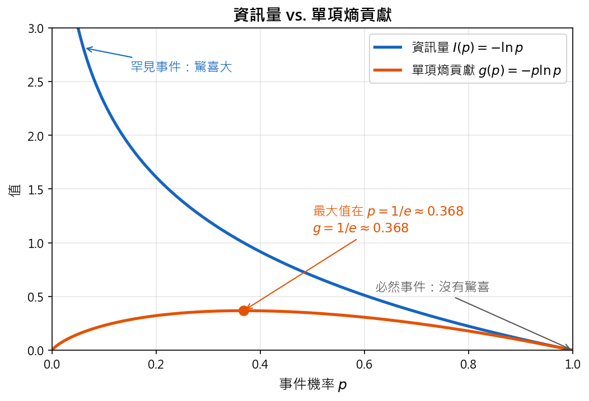
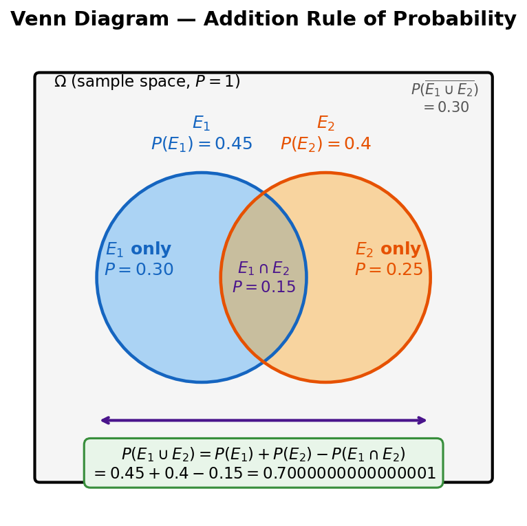
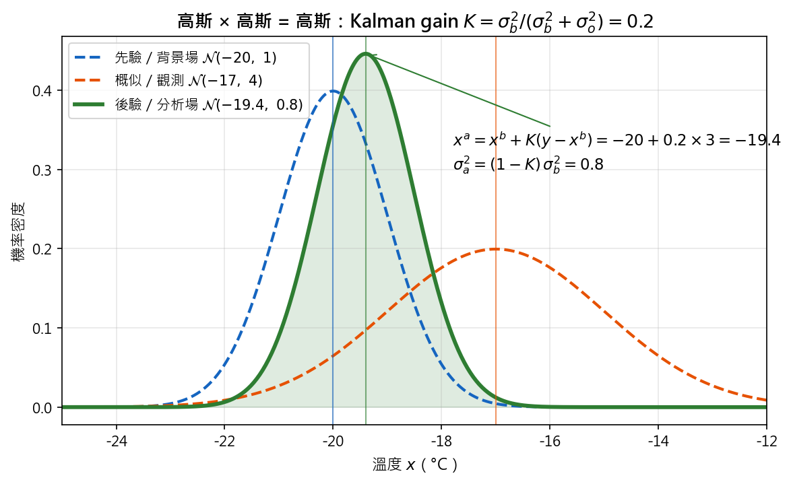

Rule 101: From Maximum Entropy to Bayes』 Theorem (Rule101：從最大熵到貝氏定理)#
在 Chapter 0 我們知道「客觀」＝把已知寫成約束，再在約束內做最佳化，工具是 Lagrange multiplier。 本章回答兩個問題：
要最佳化的函數是什麼？ 資訊熵。在已知條件之外，選擇熵最大、也就是隱含假設最少的分布 → 得到高斯分布。
拿到新資料後怎麼更新判斷？ 貝氏定理。先驗 × 概似 → 後驗；兩個高斯相乘就是資料同化。
本檔只放概念與結論；推導放在 02_proof/，例題放在 01_tool/02_Bayes/01_problems/，圖放在 00_pic/。
0. Roadmap (本章地圖)#
部分 |
節 |
核心問題 |
一句話結論 |
|---|---|---|---|
A. 為什麼是高斯 |
只知道 \(\mu, \sigma^2\) 時該選哪個分布？ |
熵最大的就是高斯 |
|
B. 描述分布 |
怎麼用數字描述一個分布？ |
動差 = 以 PDF 加權的期望值 |
|
C. 機率規則 |
兩個事件一起發生的機率？ |
乘法規則；獨立才可以直接相乘 |
|
D. 貝氏定理 |
看到證據後怎麼更新信念？ |
後驗 ∝ 概似 × 先驗；別忘了基本比率 |
|
E. 連續與資料同化 |
模式預報 + 觀測 → 最佳估計？ |
高斯 × 高斯 = 高斯，權重就是 Kalman gain |
|
F. 兩種機率觀 |
同一組資料，機率描述的是資料還是假設？ |
頻率學派 \(\Pr(\text{data} \mid H)\)、貝氏學派 \(\Pr(H \mid \text{data})\) |
1. Information Entropy (資訊熵)#
1.1 資訊量#
先定義一件事「帶有多少資訊」：
\(f(x)\) 大：常發生，單次資訊量少（例：「冬天會下雨」，不知道是哪一天）
\(f(x)\) 小：罕見，單次資訊量多（例：「冬天下了 300 mm/day」，幾乎能鎖定是哪一天）
所以資訊量取 \(-\ln f(x)\)：機率越小越大，而且獨立事件的資訊量可以相加。
1.2 資訊熵#
資訊熵是資訊量的期望值：
\(f(x)\) : 機率密度 (Probability density)
\(-\ln f(x)\) : 資訊量 (Information content)
\(H[f]\) : 資訊熵 (Information entropy)，整體資訊量的期望值
積分範圍是 \(f\) 可能不為零的所有 \(x\)（支撐集）；變數在整條實數線上時就是 \((-\infty, \infty)\)，有界的量（例如降雨 \(\ge 0\)）就只積有定義的那一段。
1.3 熵大代表什麼#
熵越大，分布越「攤平」、越沒有偏好，代表我們多假設的東西越少。 所以「只用已知、不多做假設」寫成數學，就是最大化熵。
物理量 |
數學式 |
描述對象 |
隨 \(p\) 變大（\(0 \to 1\)）的行為 |
|---|---|---|---|
資訊量 (驚喜度) |
\(I(p) = -\ln p\) |
單一事件發生時帶來的驚喜 |
永遠遞減（從 \(\infty\) 一路降到 \(0\)） |
單項對熵的貢獻 |
\(g(p) = -p\ln p\) |
單一事件的「發生機率 \(\times\) 驚喜度」 |
先升後降（在 \(p = 1/e \approx 0.368\) 達最高點，兩端 \(0\) 與 \(1\) 皆為 \(0\)） |
資訊熵 (總不確定性) |
\(H = \sum_i -p_i\ln p_i\) |
整個機率分布（所有事件的總和） |
取決於分布有多平均：越平均（越攤平）越大，越集中越小 |

2. Why the Gaussian (為什麼是高斯分布)#
兩條完全獨立的路走到同一條曲線，這就是整門課以高斯分布為中心的原因。
2.1 Route 1：已知平均與變異數時的最大熵#
統計檢定最常碰到的已知條件是平均 \(\mu\) 與變異數 \(\sigma^2\)，加上機率和為 1，共三條約束：
在這三條約束下最大化 \(H[f]\)（Lagrange multiplier，未知數是整個函數 \(f\)），得到
知道 mean 與 variance 之後，熵最大的分布就是高斯分布。
證明：01_max_entropy_Gaussian.md（做法：把 \(f\) 離散成 \(p_i\)，就變回一般的有限維 Lagrange）
2.2 Route 2：要求算術平均是最佳估計#
用多次有誤差的量測估計同一個量時，若要求「算術平均永遠是最佳（最大概似）估計」，誤差分布也只能是高斯。
2.3 高斯分布的工具#
四種寫法與性質速查：01_Gaussian_distribution.md
正規化與動差都靠的積分 \(\int x^n e^{-ax^2}dx\)：02_Gaussian_integrals.md
3. Moments (動差：平均、變異數與高階動差)#
每一個動差都是以 PDF 加權的期望值：
\(r\) |
名稱 |
意義 |
高斯的值 |
|---|---|---|---|
1 |
平均 (Mean) \(\mu\) |
分布的中心 |
\(\mu\) |
2 |
變異數 (Variance) \(\sigma^2\) |
分布的寬度 |
\(\sigma^2\) |
3 |
偏度 (Skewness) \(m_3/\sigma^3\) |
左右是否對稱 |
\(0\) |
4 |
峰度 (Kurtosis) \(m_4/\sigma^4\) |
尾巴有多厚 |
\(3\) |
高斯分布的特別之處：只要前兩個動差 \(\mu, \sigma^2\) 就完全決定整個分布。
從樣本估計時要注意的兩件事：
樣本平均的不確定性是標準誤 \(\sigma/\sqrt{N}\)：03_standard_error.md
樣本變異數要除以 \(N-1\) 才不偏：04_sample_variance_N-1.md
高斯的偏度 \(0\)、峰度 \(3\)：05_Gaussian_skewness_kurtosis.md
以上都用到的運算規則：03_expectation_rules.md
符號：大寫 \(X\) 是隨機變數、小寫 \(x\) 是實現值，見 03_notation_X_vs_x.md
4. Probability Rules (機率的基本規則)#
4.1 補集 (Complement)#
\(\Pr(E)\) 代表事件 \(E\) 發生的機率，\(\Pr(\widetilde{E})\) 代表事件 \(E\) 不發生的機率：
在給定 \(B\) 的條件下也一樣成立（解題時很常用）：
4.2 交集與聯集 (Intersection & Union)#
交集 \(\Pr(E_1 \cap E_2)\)：兩件事都發生
聯集 \(\Pr(E_1 \cup E_2)\)：至少一件發生

若兩事件互斥（不會同時發生），則 \(\Pr(E_1 \cap E_2) = 0\)，聯集直接相加。
4.3 條件機率與乘法規則 (Conditional Probability & Multiplicative Law)#
\(\Pr(A \mid B)\) 代表「給定 \(B\) 已經發生，\(A\) 發生的機率」：
第二行就是乘法規則：交集可以從任一邊「先發生」的順序去算。
4.4 獨立 (Independence)#
若 \(A\) 與 \(B\) 獨立（知道 \(B\) 不改變 \(A\) 的機率）：
不獨立時直接相乘會算錯。 天氣有持續性，所以「今天下雨」與「明天下雨」不獨立。
例題：01_weather_prediction.md（乘法規則、全機率公式、獨立性判斷）
5. Bayes』 Theorem (貝氏定理)#
5.1 直覺：同樣的證據，在不同背景下分量不同#
給定高雄人帶傘，問下雨機率：高雄平常很少下雨，會帶傘通常代表今天真的很可能下雨。
給定台北人帶傘，問下雨機率：台北常下雨、很多人天天帶傘，看到帶傘幾乎無法推斷今天是否下雨。
「帶傘」這個證據有多少分量，取決於背景機率（基本比率, base rate）。貝氏定理就是把這件事寫成公式。
5.2 推導：乘法規則換個方向#
貝氏定理把 \(\Pr(B \mid A)\) 翻成 \(\Pr(A \mid B)\)。
5.3 分母：全機率公式 (Law of Total Probability)#
分母 \(\Pr(B)\) 通常不直接知道，要把原因拆開來加總。 若 \(E_1, \dots, E_N\) 互斥且涵蓋所有可能（一組分割, partition）：
代回去就是常用的完整形式：
注意下標加在誰身上：被拆開的是「原因」\(E_i\)（例如有病／沒病、獎品在哪扇門），不是證據 \(B\)。 所以分母是 \(\sum_i \Pr(B \mid E_i)\Pr(E_i)\)，而不是 \(\sum_i \Pr(B_i)\)。 最常見的兩項版本：\(\Pr(B) = \Pr(B \mid A)\Pr(A) + \Pr(B \mid \widetilde{A})\Pr(\widetilde{A})\)。
5.4 名詞#
符號 |
名稱 |
意義 |
|---|---|---|
\(\Pr(A)\) |
先驗 (Prior, a priori) |
看到證據之前對 \(A\) 的信念 |
\(\Pr(B \mid A)\) |
概似 (Likelihood) |
若 \(A\) 為真，看到證據 \(B\) 的機率 |
\(\Pr(B)\) |
證據 (Evidence) |
不論原因為何，看到 \(B\) 的總機率（正規化常數） |
\(\Pr(A \mid B)\) |
後驗 (Posterior, a posteriori) |
看到證據之後對 \(A\) 的信念 |
5.5 解題五步驟（課本的做法）#
定義事件（含補集）
寫出要求什麼，例如 \(\Pr(C \mid +)\)
列出題目給的所有機率
檢查假設：分母用的事件是否互斥且涵蓋所有可能
代入貝氏定理
例題（都照這五步驟寫成 Background → Rule 101 → Solution → Review）：
例題 |
重點 |
|---|---|
乘法規則、全機率公式、獨立性 |
|
基本比率：檢驗再準，罕見疾病的陽性多半是偽陽性 |
|
主持人的行動是資訊：換門贏 \(2/3\) |
|
連續版：預報 + 觀測 → 分析場 |
課本另一個例子（計程車目擊者）：85% 計程車是綠色、15% 藍色，目擊者辨色正確率 80%，說看到藍車 → 真的是藍車的機率只有
6. Continuous Bayes』 Theorem (連續形式的貝氏定理)#
把機率換成機率密度、加總換成積分：
在大氣科學裡，\(x\) 是真實狀態（要估計的）、\(y\) 是觀測值（手上的資料）：
符號 |
統計學術語 |
資料同化對應 |
例子（500 hPa 溫度） |
|---|---|---|---|
\(f(x)\) |
先驗 (A priori) |
背景場 (Background)：昨天的預報或歷史統計 |
模式預報約 \(-20^{\circ}\mathrm{C}\)，帶有預報誤差 |
\(f(y \mid x)\) |
概似 (Likelihood) |
觀測誤差模型：若真值是 \(x\)，儀器讀到 \(y\) 的機率（常假設高斯 \(\propto e^{-(y-x)^2/2\sigma_o^2}\)） |
探空儀誤差約 \(\pm 2^{\circ}\mathrm{C}\) |
\(f(y)\) |
證據 (Evidence) |
正規化常數，與 \(x\) 無關 |
不論真值為何，讀到 \(-17^{\circ}\mathrm{C}\) 的總機率 |
\(f(x \mid y)\) |
後驗 (A posteriori) |
分析場 (Analysis)：結合預報與觀測後的最佳估計 |
介於 \(-20\) 與 \(-17^{\circ}\mathrm{C}\) 之間 |
離散與連續的對應：\(E_j \leftrightarrow x\)（原因／真值）、\(B \leftrightarrow y\)（證據／觀測）、\(\sum_i \leftrightarrow \int dx\)。
因為 \(f(y)\) 與 \(x\) 無關，實際計算只需要
7. Data Assimilation as Bayes』 Theorem (資料同化就是貝氏定理)#
資料同化 (DA) 的工作：用觀測 \(y\) 修正模式的場 \(x\)，也就是求 \(f(x \mid y)\)。 課本把 DA 由簡到繁分成五種，全部都是同一條貝氏定理，差別只在「推廣到哪裡」：
方法 |
推廣了什麼 |
怎麼用貝氏定理 |
|
|---|---|---|---|
7.1 |
純量貝氏 (Scalar Bayes) |
一個點、一個變數 |
先驗 × 概似 → 後驗，一次 |
7.2 |
Kalman Filter |
時間：一直重複 |
這次的後驗 = 下次的先驗 |
7.3 |
多變數 Kalman Filter |
空間：整個模式狀態向量 |
變異數 → 共變異數矩陣 |
7.4 |
3D-Var / 4D-Var |
算法：不算整個後驗，只找最大值 |
最小化 \(-\ln f(x \mid y)\) |
7.5 |
Ensemble Kalman Filter (EnKF) |
誤差估計：\(\mathbf{B}\) 不再固定 |
用系集成員估計背景誤差 |
7.1 Scalar Bayes (純量貝氏：一個點的一次更新)#
先驗與概似都是高斯：
相乘後仍是高斯（證明：06_Gaussian_product_posterior.md），結果有兩種等價寫法：
精度加權平均（統計語言）：
Kalman 形式（DA 語言）：
符號 |
統計 |
DA |
|---|---|---|
\(x^b, \sigma_b^2\) |
先驗平均、變異數 \(\mu_0, \sigma_0^2\) |
背景場與背景誤差 |
\(y, \sigma_o^2\) |
觀測、雜訊變異數 \(\sigma_w^2\) |
觀測與觀測誤差 |
\(x^a, \sigma_a^2\) |
後驗平均、變異數 \(\mu_1, \sigma_1^2\) |
分析場與分析誤差 |
\(K\) |
觀測所佔的精度權重 |
Kalman gain，\(0 \le K \le 1\) |
精度相加：分析場比預報和觀測都更確定。
\(K \to 0\)（\(\sigma_o^2 \gg \sigma_b^2\)，儀器很吵）：完全不依賴觀測，分析場貼近預報。
\(K \to 1\)（\(\sigma_b^2 \gg \sigma_o^2\)，預報很不準）：分析場貼近觀測。

7.2 Kalman Filter (時間上重複的貝氏更新)#
把 7.1 在時間上一直重複：
第 \(k\) 步的後驗（分析場）就是第 \(k+1\) 步的初始條件，模式積分之後成為新的先驗。
7.3 Multivariate Kalman Filter (多變數：整個模式狀態)#
真實狀態是向量 \(\mathbf{x}\)（上百萬個格點），觀測 \(\mathbf{y}^o\) 散在空間中、不一定在格點上。純量公式直接推廣成矩陣：
符號 |
名稱 |
推廣自 |
|---|---|---|
\(\mathbf{B}\) |
背景誤差共變異數矩陣 |
\(\sigma_b^2\) |
\(\mathbf{R}\) |
觀測誤差共變異數矩陣 |
\(\sigma_o^2\) |
\(\mathbf{H}\) |
觀測算子：把模式狀態轉成儀器會看到的量（例如把溫度剖面積分成衛星輻射） |
純量時 \(H = 1\) |
\(\mathbf{y}^o - \mathbf{H}\mathbf{x}^b\) |
新息 (Innovation)：觀測與預報差多少 |
\(y - x^b\) |
7.4 3D-Var / 4D-Var (變分法：只找後驗的最大值)#
不算整個後驗分布，只找最大後驗估計 (MAP)，也就是最小化 \(-\ln f(\mathbf{x} \mid \mathbf{y}^o)\)：
3D-Var：同一時間的觀測，最小化 \(J\)（ECMWF、NCEP 等作業中心使用）。
4D-Var：把模式積分放進代價函數，讓不同時間的觀測一起約束初始場。
在高斯假設下，MAP 與 7.1 的後驗平均相同；用 Lagrange 乘數加上物理約束的版本見 Q08 1D-Var。
7.5 Ensemble Kalman Filter (系集卡爾曼濾波)#
7.3 需要背景誤差共變異數 \(\mathbf{B}\)，但它很難知道、也會隨天氣改變。 EnKF 跑一組系集（多個略有不同的模式預報），用系集成員之間的離散程度估計 \(\mathbf{B}\)，而不是假設它固定。目前大氣與海洋資料同化廣泛使用。
8. Probability Philosophy (頻率學派與貝氏學派)#
頻率學派 (Frequentist) |
貝氏學派 (Bayesian) |
|
|---|---|---|
機率是什麼 |
重複很多次時的發生頻率 |
對一件事的相信程度 |
什麼是隨機的 |
資料 |
未知的量（假設、真值） |
先驗資訊 |
不使用 |
使用，並隨新證據更新 |
回答的問題 |
\(\Pr(\text{data} \mid \text{Hypothesis} )\)：若假設成立，看到這組資料有多可能 |
\(\Pr(\text{Hypothesis} \mid \text{data})\)：看到資料後，假設成立有多可能 |
測試的東西 |
如果我有一組資料去測試一模一樣的假設，我有多高的機率會再看到同樣的事情 |
|
行為 |
不是真實世界，但是我一值重複實驗，然後告訴你這個東西多有可能會出現 (Large Ensemble) |
根據資料調整相信的程度 |
計程車例 |
目擊者正確率 80% → 80% |
考慮城市裡藍車只有 15% → 41% |
貝氏定理就是連接 \(\Pr(\text{data} \mid H)\) 與 \(\Pr(H \mid \text{data})\) 的橋，所以它在兩派爭論的中心。
8.1 例子：2025 是史上最暖的一年嗎？#
已知（課本 99_textbook.md 的 Probability philosophy）：
量 |
值 |
|---|---|
2025 全球平均溫度距平 |
\(1.28^{\circ}\mathrm{C}\) |
2024 距平（舊紀錄） |
\(1.24^{\circ}\mathrm{C}\) |
差距 \(d\) |
\(0.04^{\circ}\mathrm{C}\) |
差距的量測誤差 \(\sigma_d\) |
\(0.05^{\circ}\mathrm{C}\) |
假設：
量測誤差是高斯、無偏。
虛無假設 \(H_0\)：兩年其實一樣暖（真正的差距為 \(0\)），看到的 \(0.04^{\circ}\mathrm{C}\) 全部來自量測誤差。
目標（顯著性）：若 \(H_0\) 成立，純雜訊做出 \(|\Delta T| \ge 0.04\) 的機率（p 值）有多大？p 值小於 \(\alpha = 0.05\) 才算顯著，相當於要求 \(|\Delta T| > 1.96\,\sigma_d \approx 0.098^{\circ}\mathrm{C}\)。
兩派的答案：
頻率學派 |
貝氏學派 |
|
|---|---|---|
算的是 |
\(\Pr(\lvert\Delta T\rvert \ge 0.04 \mid H_0)\) |
\(\Pr(d > 0 \mid \text{data})\)，平坦先驗 |
結果 |
\(z = 0.04/0.05 = 0.8\)，p \(\approx 42\%\)，不顯著 |
後驗 \(d \sim \mathcal{N}(0.04, 0.05^2)\)，\(\Phi(0.8) \approx 79\%\) |
說法 |
若兩年一樣暖，雜訊有 42% 的機會做出這麼大的差距 |
2025 有 79% 的機率是最暖的一年 |
兩個數字算術上相連：\(1 - 0.79 = 0.21 = 0.42 / 2\)（單尾）。差別在於機率描述的是資料還是假設。
互動模擬：warmest_year.html。從單一年份的誤差分布隨機抽兩個值相減，一次抽 1、10、100 或 n 次，看 \(\Delta T\) 分布慢慢長出來，再看 \(|\Delta T| \ge 0.04\) 的比例如何收斂到 42%。
9. Index (本章工具、證明與例題)#
類別 |
檔案 |
一句話 |
用在 |
|---|---|---|---|
工具 |
高斯分布的四種寫法與性質速查 |
§2、§7 |
|
工具 |
\(\int x^n e^{-ax^2}dx\)，正規化與動差都靠它 |
§2、§3 |
|
工具 |
期望值線性；獨立變數的變異數相加 |
§3 |
|
工具 |
約束下求極值（Chapter 0） |
§2 |
|
證明 |
已知 \(\mu, \sigma^2\) 的最大熵分布是高斯 |
§2.1 |
|
證明 |
平均是最佳估計，所以誤差是高斯 |
§2.2 |
|
證明 |
樣本平均的標準誤 \(\sigma/\sqrt{N}\) |
§3 |
|
證明 |
樣本變異數除以 \(N-1\) 才不偏 |
§3 |
|
證明 |
高斯的偏度 \(0\)、峰度 \(3\) |
§3 |
|
證明 |
高斯×高斯＝高斯，得到 Kalman 增益 |
§7.1 |
|
例題 |
今天下雨 → 明天下雨 |
§4 |
|
例題 |
快篩陽性真的有病的機率 |
§5 |
|
例題 |
三門問題：換門贏 \(2/3\) |
§5 |
|
例題 |
預報 + 探空 → 分析場 |
§7.1 |
|
圖 |
資訊量與單項熵貢獻 |
§1 |
|
圖 |
交集與聯集（文氏圖） |
§4 |
|
圖 |
面積 = 機率：今天／明天下雨 |
例題 01 |
|
圖 |
快篩陽性的組成、盛行率 vs 陽性預測值 |
例題 02 |
|
圖 |
三門問題的先驗 × 概似分割 |
例題 03 |
|
圖 |
高斯更新、不同誤差下的 Kalman gain |
§7.1、例題 04 |
|
互動 |
抽樣建立 \(\Delta T\) 分布，檢定 2025 是否最暖 |
§8.1 |
符號補充：03_notation_X_vs_x.md（大寫隨機變數 vs 小寫觀測值）
課堂講義原文：99_textbook.md
10. Coming Next (講義後半，尚未整理)#
講義 Week 1–3 後半的主題，之後可以照同樣的「概念在本檔、證明拉出去」方式補上：
主題 |
講義章節 |
|---|---|
常態分布與 z 分數、信賴區間、中央極限定理 |
Statistical Significance Testing |
t 檢定（小樣本） |
The t-statistic |
假設檢定、型一／型二錯誤 |
Hypothesis Testing |
Bootstrap、Jackknife、Monte Carlo |
Monte Carlo and Resampling techniques |
合成分析 (Compositing) |
Compositing |
卡方、F、二項分布 |
Other Common Distributions |
無母數檢定 |
Non-parametric Tests |